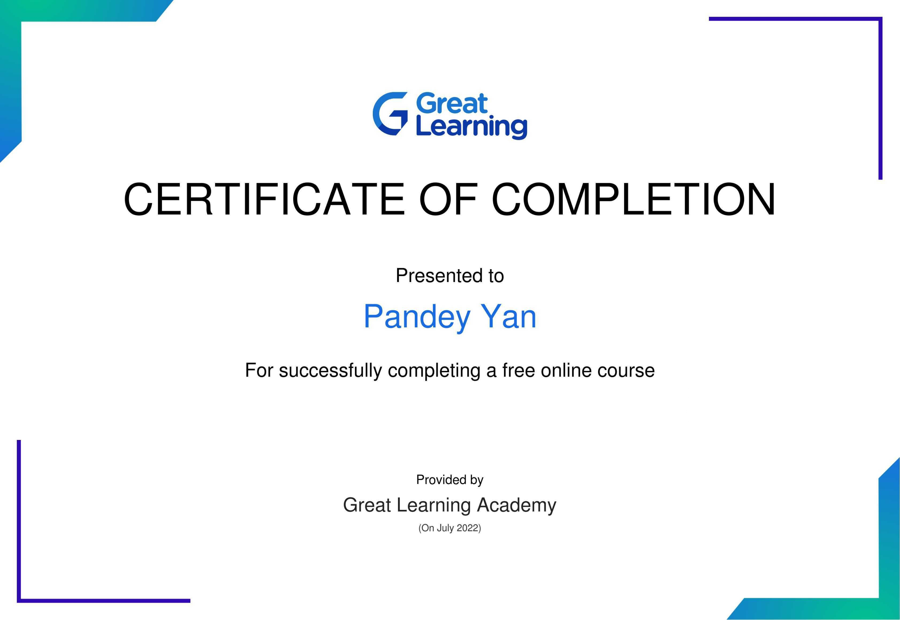

My Journey
**Bachelor's Degree in Computer Science and Web Development:**
journey in the realm of computer science and web development began with my enrollment in the Bachelor's program at Chulalongkorn University. The first year provided a solid foundation in fundamental computer science concepts such as programming languages, algorithms, and data structures. As I delved deeper into the coursework, I started to specialize in web development during my second and third years.
During this period, I became proficient in languages like HTML, CSS, JavaScript, and learned to build dynamic and interactive websites. Practical projects and internships allowed me to apply theoretical knowledge to real-world scenarios, honing my skills in creating responsive and user-friendly web applications.
The final year of the Bachelor's program included a substantial capstone project, where I collaborated with peers to design and develop a comprehensive web application. This experience not only showcased our technical abilities but also emphasized teamwork, project management, and effective communication skills.
**Internships and Extracurriculars:**
Throughout my undergraduate studies, I sought internships to gain practical experience and expand my skill set. These experiences ranged from working with startups to established tech companies, allowing me to explore different facets of the industry and understand the dynamic nature of web development in real-world scenarios.
I also actively participated in coding competitions, hackathons, and tech conferences, enhancing my problem-solving skills and staying updated on the latest trends in the field. Networking with professionals and fellow students proved invaluable in broadening my perspective and opening doors to new opportunities.
**Master's Degree in Computer Science with a Focus on Advanced Web Technologies:**
Eager to delve deeper into the field, I decided to pursue a Master's degree with a focus on advanced web technologies. The Master's program at [University Name] provided an in-depth exploration of topics such as cloud computing, machine learning, and advanced web development frameworks.
Research opportunities and elective courses allowed me to tailor my academic journey to align with my interests. I engaged in projects that pushed the boundaries of web development, including experimenting with emerging technologies like Progressive Web Apps (PWAs), serverless architectures, and microservices.
The master's thesis became a culmination of my academic pursuits, focusing on a novel approach to optimizing web application performance through the integration of artificial intelligence. This research not only contributed to the academic community but also deepened my understanding of the intricate relationship between computer science, web development, and cutting-edge technologies.
**Conclusion:**
From the foundational knowledge gained during my Bachelor's degree to the specialized expertise acquired in my Master's program, my academic journey in computer science and web development has been a transformative experience. The combination of theoretical learning, practical applications, and a commitment to continuous learning has prepared me to navigate the ever-evolving landscape of technology and contribute meaningfully to the field. As I transition into the professional world, I carry with me not only technical proficiency but also a passion for innovation and a dedication to lifelong learning in the dynamic field of computer science and web development.

Back